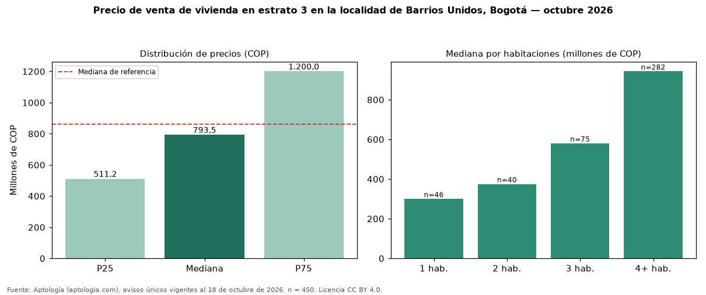

Precio de venta de vivienda en estrato 3 en la localidad de Barrios Unidos, Bogotá — octubre 2026
En la localidad de Barrios Unidos, Bogotá, la mediana de precio de venta de vivienda en estrato 3 es COP 794 millones (n = 450 avisos únicos). Eso es 8 % menos que la mediana de toda la oferta de venta en la localidad de Barrios Unidos, Bogotá (COP 860 millones). En todo Bogotá, la misma combinación tiene mediana COP 410 millones (+94 %). Por metro cuadrado, la mediana es COP 4.545.455/m² (−25 % frente a COP 6.047.345/m²), puesto 12 de 18 localidades comparables. Cruzando con la oferta de arriendo equivalente, la rentabilidad bruta implícita es 10,2 % anual. El rango intercuartílico va de COP 511 millones a COP 1,20 mil millones (razón 2,3). Por habitaciones: 1 habitación, COP 300 millones (n = 46); 2 habitaciones, COP 375 millones (n = 40); 3 habitaciones, COP 580 millones (n = 75); 4 o más habitaciones, COP 942 millones (n = 282). Datos abiertos CC BY 4.0 de Aptología; fuente y búsqueda de inmuebles: https://www.aptologia.com/venta/bogota/barrios-unidos. Archivos: PDF de 2 páginas, CSV con las cifras y gráfica PNG.

| Avisos únicos | 450 |
|---|---|
| Percentil 25 | COP 511.250.000 |
| Mediana | COP 793.500.000 |
| Percentil 75 | COP 1.200.000.000 |
| Mediana por m² | COP 4.545.454 |
Fuente: avisos vigentes de portales inmobiliarios recopilados por Aptología, deduplicados (mínimo 30 avisos únicos por celda). Precios pedidos, no cerrados. Fecha: 2026-10-18.